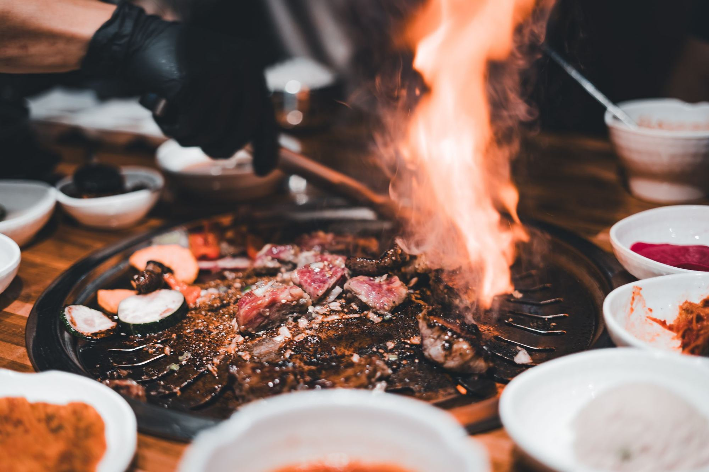
一千七百年的火Seventeen centuries of fire
半岛人吃烤肉的历史，是一部「能不能吃到肉」的历史：佛教戒杀、耕牛稀缺与牛禁一再让肉难上餐桌，蒙古人、两班的暖炉会、平壤的松林、首尔的蜂窝煤又一次次把火点回来。1945 年以后，同一种吃法在南北两边走上了两条路。拖底部的刻度尺，或者直接往下滚。On the peninsula, the history of barbecue is a history of whether you could get meat at all. Buddhist strictures, scarce oxen and cattle bans kept meat scarce; Mongols, Joseon scholars’ brazier parties, Pyongyang’s pine groves and Seoul’s coal briquettes kept lighting the fire again. After 1945 the same way of eating went two ways, North and South. Drag the ruler at the bottom, or just scroll.
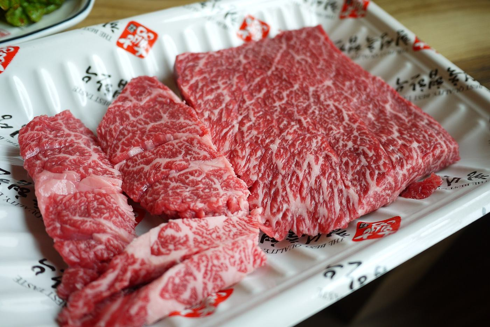
一头韩牛，怎样被分开、怎样被卖贵One Hanwoo: how it is cut, and how it is sold dear
韩牛几乎只在韩国卖：2025 年 1–7 月只出口了 27.2 吨（约 180 万美元）；按 2024 年的出口量算，约八成去了香港。它的成功不在出海，而在守住本国的高端市场——1993 年在全面开放进口前先搞分级，2008–09 年建立从农场到肉铺的个体溯源，2005 年起农户每屠宰一头牛交 2 万韩元自助金做宣传，再加上「肉铺 + 餐厅」和名节礼盒。先从一头牛怎样被分开说起。Hanwoo is sold almost only in Korea: Jan–Jul 2025 exports came to just 27.2 tonnes (about $1.8M), and in 2024 about four-fifths of the volume went to Hong Kong. Its success is not abroad but in holding the premium end of the home market — grading introduced in 1993 before imports fully opened, farm-to-counter traceability for every animal in 2008–09, farmers paying ₩20,000 a head at slaughter since 2005 for promotion, plus butcher-restaurants and holiday gift boxes. Start with how one animal is taken apart.
一头牛的分割图Butchery chart of one animal
韩国的牛肉零售标示标准把一头牛分成 10 个大分割、39 个小分割。点一个大块看位置、口感和吃法，再点里面的小分割。《韩牛狂想曲》里说的「一头牛能分出 120 种部位与风味」，常被归到人类学家米德名下，但原始出处找不到；39 是官方数字。Korea’s retail labelling standard divides a carcass into 10 primals and 39 sub-primals. Tap a block for where it sits, how it eats and how it’s cooked, then tap the sub-cuts. The “120 cuts and flavours in one cow” quoted in Hanwoo Rhapsody is usually credited to Margaret Mead, but no original source turns up; 39 is the official number.
示意图只表示各大分割的相对位置（左头右尾、上背下腹），面积不按重量。Positions are schematic (head left, back on top); areas are not to scale.
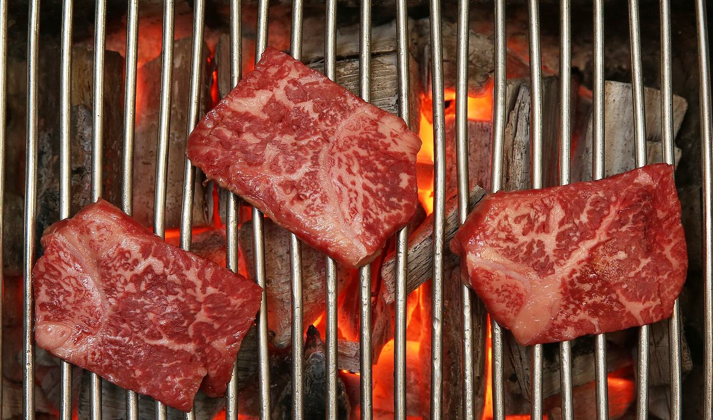
烤一块：选个部位，按下上烤盘Grill one: pick a cut, put it on
《韩牛狂想曲》里的那一段That scene in Hanwoo Rhapsody
- KBS1《다큐 인사이트》两集，白种元讲述；2021 年 12 月 9 日、16 日首播，Netflix 也在 2021 年上线。是「K-FOOD 狂想曲」系列的第三部，前两部是五花肉与冷面。Two episodes of KBS1’s Docu Insight, presented by Paik Jong-won, first aired 9 and 16 December 2021 and released on Netflix the same year — third in the “K-Food Rhapsody” series after pork belly and naengmyeon.
- 第 1 集讲从불고기、갈비到韩牛，一头牛能分出的部位与风味，以及溯源制度；第 2 集讲「一头牛没有浪费的部分」——곰탕、설렁탕、头尾、内脏、牛舌与骨髓。Episode 1 goes from bulgogi and galbi to Hanwoo — the cuts and flavours of one animal, and traceability. Episode 2: “no part goes to waste” — gomtang, seolleongtang, head, tail, offal, tongue and marrow.
- 片中走访的是「精肉食堂」：先在肉铺按部位、等级挑肉，再付少量桌位费在隔壁自己烤。It visits a jeongyuk sikdang: choose by cut and grade at the butcher’s counter, then pay a small table fee and grill it next door.
等级：卖的是大理石纹Grades: selling the marbling
肉质等级以大理石纹（1–9 号）为主，2019 年起肉色、脂肪色、组织感也分别评级、取最低一项；2019 年 12 月起 1++ 由 8–9 号下调为 7–9 号，目的是把平均育肥期从 31.2 个月缩到 29 个月。另有产肉量等级 A/B/C，两者合标，如「1++A」。韩牛 1 等级以上的比例，1993 年刚分级时约 10.7%，2022 年 75.2%。Quality grade rests mainly on marbling (No. 1–9); since 2019 meat colour, fat colour and texture are also graded and the lowest applies; since December 2019, 1++ needs No. 7–9 instead of 8–9, to cut average finishing from 31.2 to 29 months. A separate yield grade A/B/C is shown alongside, e.g. “1++A”. The share of Hanwoo grading 1 or above was about 10.7% when grading began in 1993, and 75.2% in 2022.
大理石纹 7–9 号Marbling No. 7–9
大理石纹 6 号Marbling No. 6
大理石纹 4–5 号Marbling No. 4–5
大理石纹 2–3 号Marbling No. 2–3
大理石纹 1 号Marbling No. 1
进口牛肉量与牛肉自给率Beef imports and self-sufficiency
拖动图表或点黄色编号，看每个年份发生了什么。红线是进口量（左轴），黑线是自给率（右轴）。Drag across the chart or tap the yellow markers. Red: imports (left axis). Black: self-sufficiency (right axis).
口径：2004–2015 年取自韩国农村经济研究院（KREI）的展望与现案分析（2004–2009 为精肉基准）；2020–2022 年自给率按 USDA 胴体当量推算，2021 年进口量是 USDA 产品重量，和前一段不可直接相比，所以图上断开。2025 年只有 1–10 月的海关累计（423.7 千吨），不是全年，没有画进图里。中间缺的年份没有找到同口径数据。Basis: 2004–2015 from the Korea Rural Economic Institute (KREI) outlooks (2004–09 on a boneless basis); 2020–22 self-sufficiency is derived from USDA carcass-weight data and 2021 imports are USDA product weight — not directly comparable, hence the break. 2025 has only Jan–Oct customs data (423.7k t), not a full year, so it is left off the chart. Missing years had no like-for-like data.
韩牛与和牛：一个守家，一个出海Hanwoo vs Wagyu: one guards home, one went global
把国产牛卖贵的七招Seven ways to sell domestic beef dear
点开每一行看事实与出处。Open a row for the facts and sources.
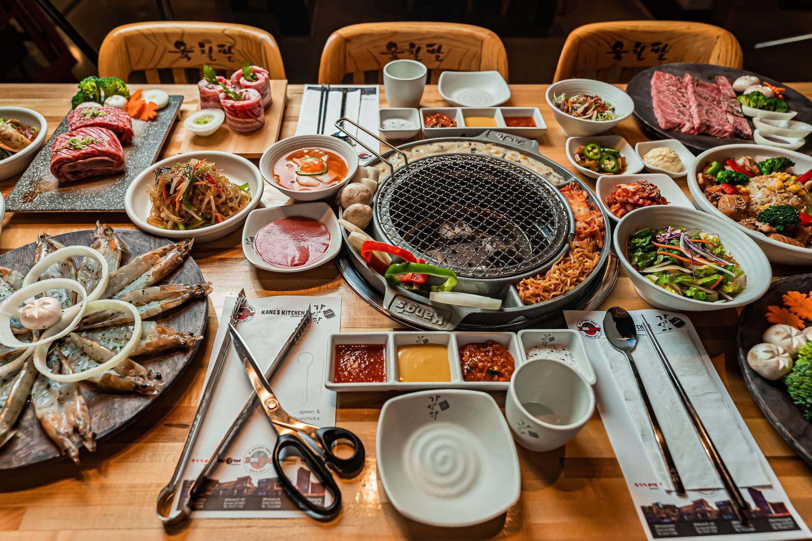
一张桌子：南边与北边One table, North and South
真正走出半岛的，不是哪一块肉，而是一张桌子的规矩：火在桌子中间，肉由你自己翻，剪刀代替刀，生菜代替盘子，小菜吃完通常还会再上。平壤的烤鸭肉餐厅，流程几乎一模一样。What left the peninsula was not a cut of meat but the rules of a table: fire in the middle, you turn the meat, scissors instead of knives, lettuce instead of plates, side dishes that usually come back. Pyongyang’s duck-barbecue restaurants run almost the same script.
一张韩烤桌的规矩The rules of the table
点左边的每一条。Tap each rule.
同一张桌子，两种肉One table, two kinds of meat
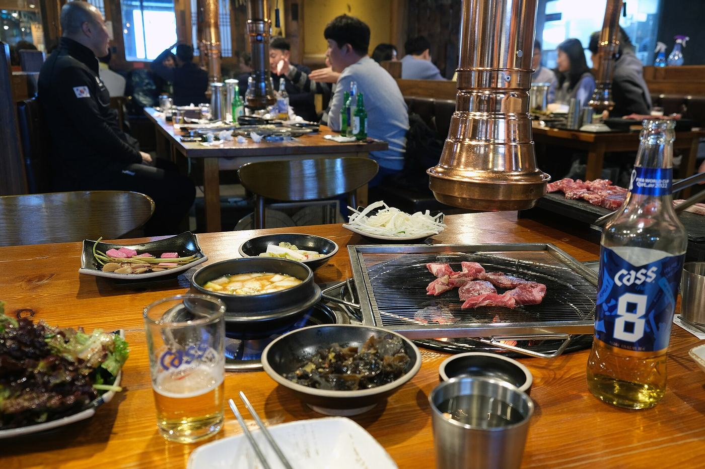
南 · 首尔的一桌South · a table in Seoul
牛、猪都上桌，按部位点Beef and pork, ordered by cut- 按部位点肉：牛肉眼、牛排骨、五花、猪颈肉，菜单就是一张分割图。You order by cut — ribeye, short rib, pork belly, neck: the menu is a butchery chart.
- 韩牛与进口牛分开标价；餐馆须标原产地，肉铺的标签上有等级与 12 位溯源号。Hanwoo and imported beef are priced apart; restaurants must show origin, and butcher labels carry the grade and the 12-digit traceability number.
- 2024 年立法终结食用狗肉，罚则 2027 年生效。Dog meat is being legislated out; penalties apply from 2027.
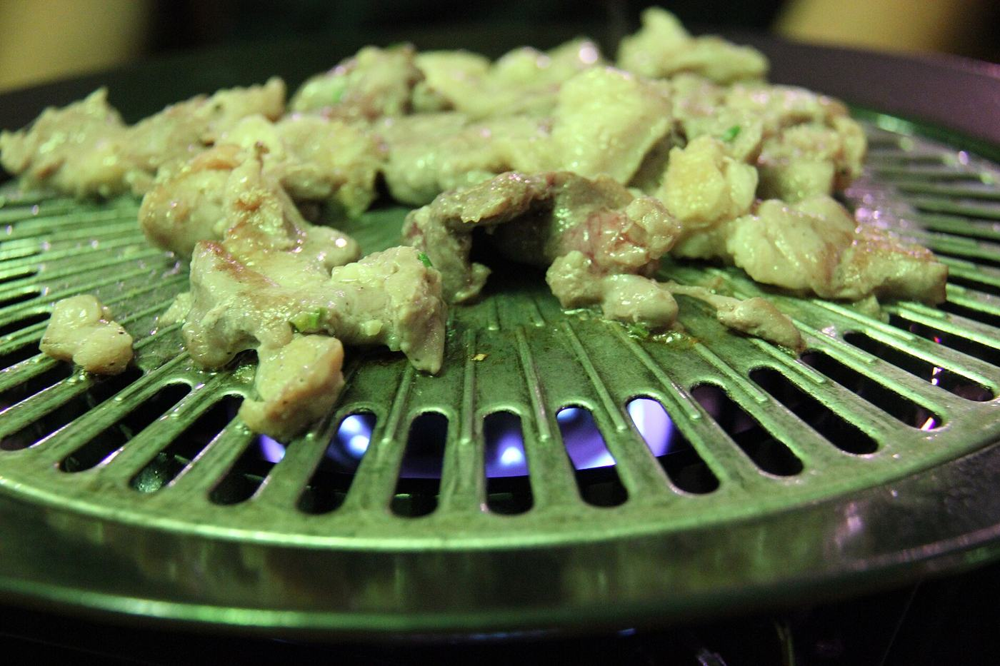
北 · 平壤的一桌North · a table in Pyongyang
牛肉稀缺，鸭、猪、蛤蜊上桌Beef is scarce: duck, pork, clams- 牛是国家财产，牛肉主要流向干部、军官与外国人。Cattle belong to the state; beef goes mainly to officials, officers and foreigners.
- 烤鸭肉餐厅的流程与南边几乎相同：自烤、生菜包、烧酒、冷面收尾。The duck house runs almost the Southern script: grill it yourself, wrap, soju, noodles.
- 단고기（狗肉）是官方认定的民族料理。Dangogi (dog meat) is an officially honoured national dish.
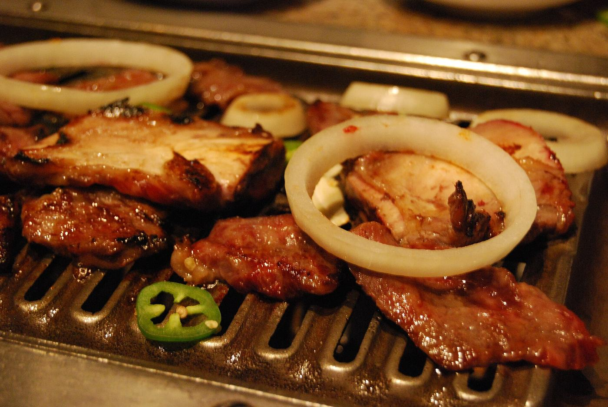
出海：美国与中国Abroad: America and China
同一张桌子，在韩国餐饮企业的两个最大海外市场走出了相反的曲线：美国从移民社区的食堂一路做到纳斯达克上市；中国从 1992 年建交后的第一代连锁（汉阳馆、汉拿山）做到上百家门店，2017 年萨德之后韩国招牌遇冷，到 2020 年代，韩式成了中国烤肉的三大赛道之一。拖动年份，看节点一个个亮起来。The same table traced opposite curves in the two biggest foreign markets for Korean restaurant brands. In America it went from immigrant canteen to a Nasdaq listing; in China from the first post-1992 chains (Hanyangguan, Hannashan) to hundreds of outlets — then, after THAAD in 2017, the Korean label cooled, and by the 2020s Korean-style had become one of the three lanes of Chinese barbecue. Drag the year and watch the map light up.
两国大事件The big moments, side by side
按 ▶ 播放，或拖动、点任意一个点；‹ › 在事件之间一件件跳。1965 年以前压缩显示。每条下面都有来源。Press ▶, drag, or tap any dot; ‹ › step from event to event. Years before 1965 are compressed. Every event links to its source.
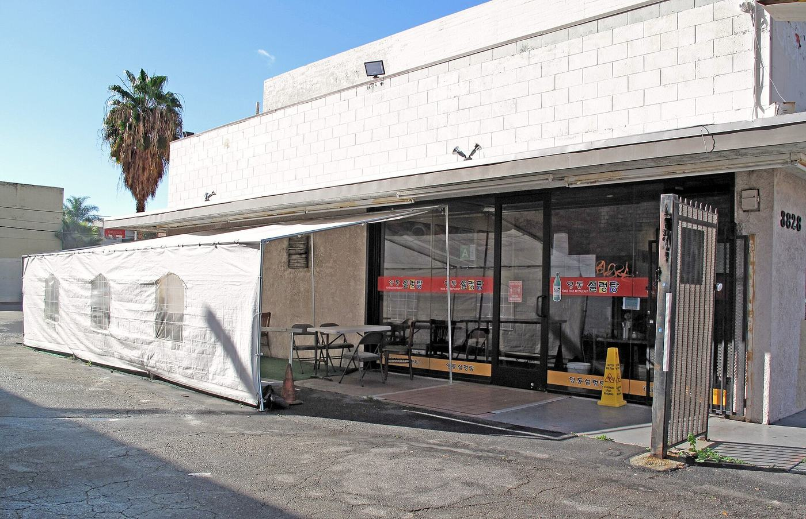
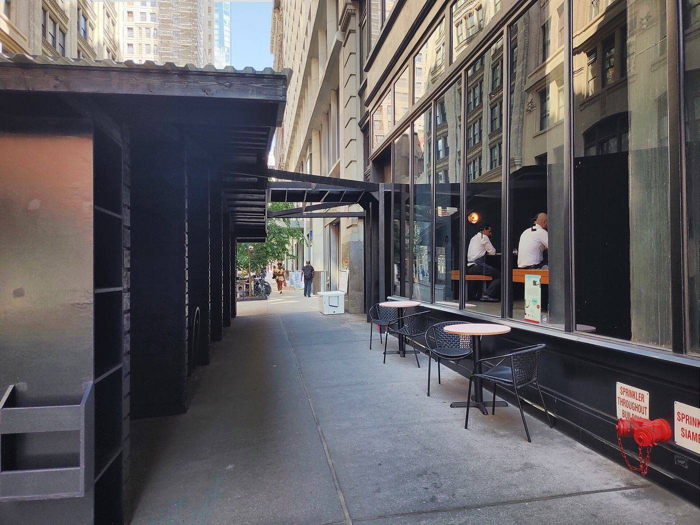
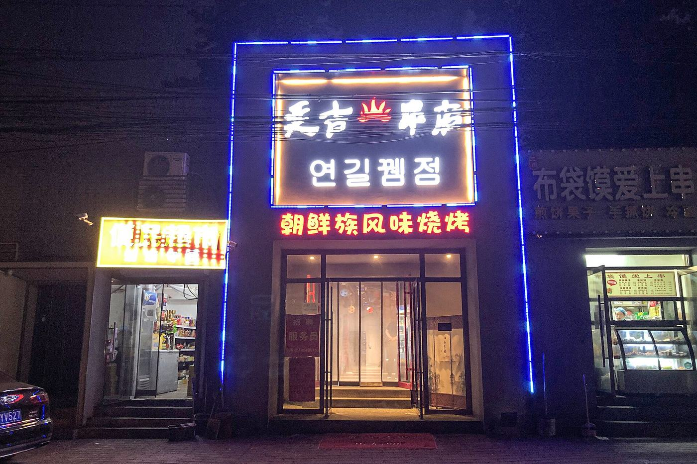
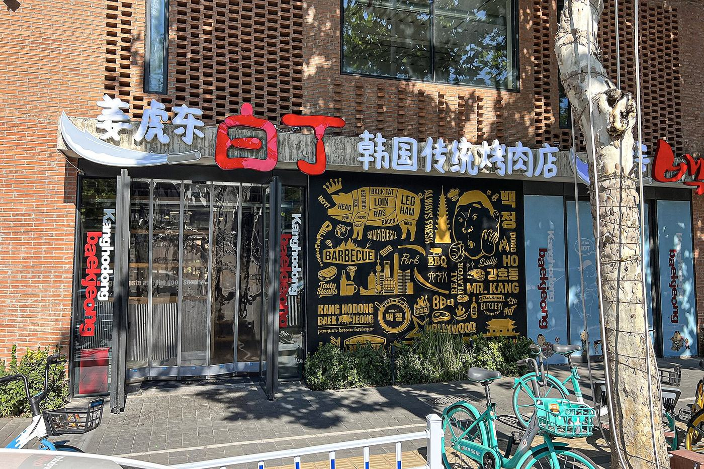
两国各阶段Phase by phase
两组「海外韩餐馆」数字口径不同：韩食振兴院统计的是全部韩餐馆（2017 年 90 国 33,499 家），农林畜产食品部与 aT 统计的是韩国餐饮品牌的连锁门店（2025 年 56 国 4,644 家），不能放在一起比。Two different counts: the Korean Food Promotion Institute counts all Korean restaurants abroad (33,499 in 90 countries, 2017); MAFRA/aT counts outlets of Korean restaurant brands (4,644 in 56 countries, 2025). They are not comparable.
展开两国各阶段的全部事实Show every fact, phase by phase
USA美国：从社区食堂到纳斯达克US: from canteen to Nasdaq
移民前史：夏威夷甘蔗园到洛杉矶Pre-history: from Hawaiian plantations to Los Angeles
- 1903年1月，第一批约百名韩国移民乘「盖尔号」抵达檀香山，进入夏威夷甘蔗种植园工作，这被视为韩裔美国移民史的起点。In January 1903 the first group of roughly 100 Korean immigrants arrived in Honolulu aboard the SS Gaelic to work on Hawaiian sugar plantations, conventionally the start of Korean American immigration.
- 1904–1905年，安昌浩在加州河滨（Riverside）组建以家庭为单位的韩人聚落「帕恰帕营地」（Pachappa Camp）；1913年柑橘业遭霜冻后，安家迁往洛杉矶邦克山。In 1904–05 Ahn Chang-ho formed Pachappa Camp, a family-based Korean settlement in Riverside, California; after a 1913 freeze hit the citrus industry his family moved to Bunker Hill in Los Angeles.
再看 1 条1 more
- 1965年前，美国移民配额制度严格限制亚洲移民，洛杉矶韩裔人口规模很小。Before 1965, U.S. national-origin quotas sharply restricted Asian immigration and the Korean community in Los Angeles remained small.
1965 移民法与韩国城成形：最早的韩餐馆After 1965: Koreatown takes shape, the first Korean restaurants
- 1965年《哈特-塞勒移民法》废除国籍配额，韩国移民大量涌入，洛杉矶公共图书馆称这是韩裔社区壮大的关键转折。The 1965 Hart-Celler Act ended national-origin quotas and opened the door to large-scale Korean immigration, which the LA Public Library calls the turning point for the community's growth.
- 1968年移民至洛杉矶的李喜德（Hi Duk Lee）在奥林匹克大道开设「奥林匹克市场」，成为当时约一万名洛杉矶韩裔的采购中心，常被视为韩国城的起点。Hi Duk Lee, who immigrated in 1968, opened the Olympic Market on Olympic Boulevard, a destination for the roughly 10,000 Koreans then living in LA and often cited as Koreatown's seed.
再看 4 条4 more
- 「新韩国餐厅」（New Korea Restaurant）1969年在奥林匹克大道开业，是洛杉矶最早一批韩餐馆之一；1978年「东一庄」在第八街开业（2020年歇业），1983年「江南会馆」在奥林匹克大道开业并延续至今。New Korea Restaurant opened on Olympic Boulevard in 1969, among LA's first Korean restaurants; Dong Il Jang opened on 8th Street in 1978 (closed 2020), and Gangnam Hoegwan opened on Olympic in 1983 and is still run by the same owner.
- 1980年韩国城被定为洛杉矶官方认可的街区，1982年在10号高速与诺曼底大道附近竖起「Koreatown」路牌。Koreatown was recognized as an official Los Angeles neighborhood in 1980, and Koreatown signs went up near the 10 Freeway and Normandie Avenue in 1982.
- 1985年开业的「清云自助」（Choeng Wun Buffet）最初是自助餐馆，被LAist称为洛杉矶「吃到饱」韩式烤肉的雏形，2000年代改为AYCE烤肉。Choeng Wun Buffet, opened in 1985 as a cafeteria-style buffet, is described by LAist as a proto-AYCE Korean barbecue spot; it rebranded as all-you-can-eat BBQ in the 2000s.
- 纽约曼哈顿32街一带在1980年代出现韩文书店和少量韩餐馆，后来发展为「韩国街」（Korea Way）。In the 1980s a Korean bookstore and a handful of restaurants appeared around West 32nd Street in Manhattan, the core of what became Korea Way.
社区食堂时代：以韩裔顾客为主Community era: Korean BBQ for Korean Americans
- 1990年代起，洛杉矶韩国城的烤肉店（如 Park's BBQ、朝鲜排骨 Chosun Galbee、水原排骨等）主要服务韩裔社区，以木炭或燃气桌边烤为特色。From the 1990s, LA Koreatown BBQ houses such as Park's BBQ, Chosun Galbee and Suwon Galbi mostly served the Korean community, built around tableside charcoal or gas grills.
- 1992年洛杉矶骚乱中韩国城商户损失惨重；LAist记载的一家韩国城餐馆「江边」即在骚乱后关闭。Koreatown businesses suffered heavy losses in the 1992 Los Angeles riots; LAist notes the Koreatown restaurant Kangbyun closed after the riots.
再看 2 条2 more
- 2000–2010年间，曼哈顿韩裔人口几乎翻倍至约2万人，32街韩国街集中了上百家小商户。Between 2000 and 2010 Manhattan's Korean population nearly doubled to about 20,000, and Korea Way on 32nd Street had more than 100 small businesses.
- 2000年代，随着韩流兴起，部分韩国城自助餐馆改为「吃到饱」（AYCE）烤肉形式，客群开始超出韩裔。In the 2000s, as the Korean Wave grew, some Koreatown buffets rebranded as all-you-can-eat (AYCE) barbecue, drawing customers beyond Korean Americans.
Kogi 塔可车：韩味进入主流Kogi and the crossover moment
- 2008年11月19日，马克·曼圭拉（Mark Manguera）与卡罗琳·申创办 Kogi 韩式烤肉餐车，崔洛伊（Roy Choi）任主厨，把韩式烤肉夹进墨西哥塔可饼。On November 19, 2008, Mark Manguera and Caroline Shin launched the Kogi Korean BBQ truck with Roy Choi as chef, putting Korean barbecue into Mexican tacos.
- Kogi 用 Twitter 实时公布餐车位置，2009年年中已有约3.6万关注者，被视为社交媒体驱动餐饮的早期范例。Kogi used Twitter to post its truck locations in real time, reaching about 36,000 followers by mid-2009, an early case of social-media-driven food business.
再看 2 条2 more
- 2010年崔洛伊获《Food & Wine》「最佳新厨师」，是首位获此奖的餐车厨师；2011年年中 Kogi 扩至5辆餐车。In 2010 Roy Choi was named a Food & Wine Best New Chef, the first food-truck chef to win it; by mid-2011 Kogi ran five trucks.
- 2011年，韩裔移民金大卫（David Kim）与张在（Jae Chang）在加州塔斯廷开出第一家 GEN Korean BBQ，以平价「吃到饱」模式进入郊区购物中心。In 2011 Korean immigrants David Kim and Jae Chang opened the first GEN Korean BBQ in Tustin, California, bringing affordable all-you-can-eat barbecue to suburban malls.
连锁扩张：AYCE 与高端双线并进Scaling up: AYCE chains and high-end KBBQ
- 首尔连锁「姜虎东白丁」2012年在洛杉矶韩国城开出美国首店，2014年12月进驻曼哈顿32街，当时在美已有洛杉矶、法拉盛、夏威夷、亚特兰大等店。Seoul-based Kang Ho Dong Baekjeong opened its first U.S. branch in LA Koreatown in 2012 and reached West 32nd Street in Manhattan in December 2014, joining branches in LA, Flushing, Hawaii and Atlanta.
- 2017年6月8日，金西蒙（Simon Kim）在纽约熨斗区开设韩式牛排馆 Cote，开业一年内获米其林一星；迈阿密店2021年2月开业，2022年获一星；拉斯维加斯店2025年10月开业。Simon Kim opened the Korean steakhouse Cote in New York's Flatiron District on June 8, 2017; it earned a Michelin star within a year. Cote Miami opened in February 2021 and won a star in 2022; a Las Vegas branch opened in October 2025.
再看 1 条1 more
- 据 Circana 统计，2018年以来美国新开约450家韩餐门店，其中36%集中在洛杉矶、旧金山和纽约三大市场。Circana counts about 450 new Korean restaurant locations in the U.S. since 2018, 36% of them in Los Angeles, San Francisco and New York.
韩流时代：上市、超市与全国化Hallyu era: IPO, supermarkets, nationwide reach
- 2023年6月，GEN Restaurant Group 在纳斯达克上市（代码 GENK），募资约4320万美元，成为美国首家上市的韩式烤肉连锁。In June 2023 GEN Restaurant Group listed on Nasdaq under GENK, raising about $43.2 million, the first U.S.-listed Korean barbecue chain.
- GEN 2024年营收2.084亿美元，较2023年的1.81亿美元增长15.1%；年底门店43家（上年37家），但可比门店销售下降5.6%。GEN's 2024 revenue was $208.4 million, up 15.1% from $181.0 million in 2023; it ended the year with 43 restaurants (37 a year earlier), while comparable sales fell 5.6%.
再看 4 条4 more
- 据韩国农林畜产食品部与 aT 调查，韩国餐饮企业在美门店从2020年的528家增至2025年的约1,106家，增长约1.1倍，美国取代中国成为韩餐企业最大海外市场；这批海外门店以炸鸡、面包连锁为主（全部海外门店里炸鸡占 39%、面包店 25.5%）。Per a MAFRA/aT survey, outlets of Korean food-service companies in the U.S. rose from 528 in 2020 to about 1,106 in 2025, making the U.S. their largest overseas market, ahead of China; these outlets are mostly fried-chicken and bakery chains (39% and 25.5% of all overseas outlets).
- 2023年8月，白丁在圣何塞 Westfield Valley Fair 购物中心开出湾区首店（位于 Stevens Creek 大道，紧邻圣克拉拉），全美约8家门店。In August 2023 Baekjeong opened its first Bay Area location at Westfield Valley Fair in San Jose, on the Santa Clara border, bringing it to about eight U.S. restaurants.
- 韩裔超市 H Mart 起源于1982年权一渊在纽约皇后区伍德赛德开的小店「韩亚龙」（Han Ah Reum），如今在美加有100多家门店、年销售额约20亿美元，并持续向佛州、得州等阳光地带扩张。H Mart began in 1982 as Il Yeon Kwon's small Han Ah Reum store in Woodside, Queens; it now has 100+ stores in the U.S. and Canada and about $2 billion in annual sales, and is expanding across the Sun Belt.
- Circana 数据显示，2024年美国韩式炸鸡连锁（7个品牌）门店405家，同比增22%；韩式热狗连锁242家，同比增52%。Circana data show U.S. Korean fried chicken chains (7 brands) had 405 locations in 2024, up 22% year over year, and Korean corn-dog chains had 242, up 52%.
CHINA中国：从建交后的连锁到本土赛道China: from post-1992 chains to a local category
延边底色：朝鲜族与黄牛Yanbian roots: Korean-Chinese and their cattle
- 19世纪至1940年代，大批朝鲜半岛移民越过图们江进入今吉林延边一带定居，形成中国朝鲜族聚居区。From the 19th century to the 1940s, waves of migrants from the Korean Peninsula crossed the Tumen River and settled in today's Yanbian, Jilin, forming China's main Korean-Chinese community.
- 清代自朝鲜咸镜北道引入的牛种，后来在当地发展为「延边黄牛」，是朝鲜族烤牛肉的本地原料。Cattle brought in from North Hamgyong Province during the Qing dynasty later developed into the local Yanbian Yellow Cattle, the native beef behind Korean-Chinese grilled beef.
建交之后：第一代韩式烤肉连锁After diplomatic ties: the first Korean BBQ chains
- 1992年8月中韩建交，此后韩国企业、留学生与外派人员大量进入北京、上海、青岛、沈阳等城市，形成北京望京、上海虹泉路等韩国人聚居区。China and South Korea established diplomatic relations in August 1992; Korean companies, students and expatriates followed into Beijing, Shanghai, Qingdao and Shenyang, forming enclaves such as Wangjing in Beijing and Hongquan Road in Shanghai.
- 1998年，车顺爱在深圳开出第一家「汉阳馆」韩式烤肉，后在深圳、上海、佛山、南京、福州、海口6城开到15家，如今已全部歇业。In 1998 Cha Soon-ae opened the first Hanyangguan Korean BBQ in Shenzhen; it grew to 15 outlets in six cities including Shanghai and Nanjing, all now closed.
再看 1 条1 more
- 「汉拿山」是中国市场第一代韩式烤肉连锁之一，其运营公司北京汉拿山餐饮管理有限公司2004年在北京朝阳注册，旗下另有韩罗苑等品牌。Hannashan, one of China's first-generation Korean BBQ chains, is run by Beijing Hannashan Catering Management, registered in Chaoyang, Beijing, in 2004; it also owns brands such as Hanluoyuan.
韩流高峰：韩餐在中国最快的十年Hallyu peak: Korean dining's fastest decade in China
- 据韩食振兴院调查，中国的韩餐馆 2017 年达 15,985 家，为 2009 年的约 7.8 倍，是海外韩餐馆最多的国家。Per Korean Food Promotion Institute surveys, Korean restaurants in China grew about 7.8-fold over eight years from 2009, reaching 15,985 in 2017, the most of any foreign country.
- 2014年初韩剧《来自星星的你》热播，女主角一句「下初雪要吃炸鸡配啤酒」带动中国炸鸡啤酒热，上海虹泉路韩国街的韩式炸鸡、烤肉店出现排队数小时的盛况。The early-2014 hit K-drama My Love from the Star, whose heroine craves fried chicken and beer on the first snow, set off a chimaek craze in China; Korean shops on Shanghai's Hongquan Road saw hours-long lines.
再看 1 条1 more
- 据汉拿山副总裁焦斌2015年的说法，汉拿山全国门店约260家；同年12月公司完成由普思资本投资的A轮融资。Hannashan VP Jiao Bin said in 2015 that the chain had about 260 stores nationwide; in December 2015 it closed a Series A round led by Prospect Capital.
萨德与「限韩令」：韩国招牌遇冷THAAD and the 'Korea ban': Korean brands chill
- 2016年韩国决定部署美国「萨德」反导系统，2017年3月起中国出现针对韩国企业、旅游和文化产品的一系列限制，民间称「限韩令」。After Seoul agreed in 2016 to deploy the U.S. THAAD missile-defense system, China from March 2017 imposed a series of restrictions on Korean companies, tourism and cultural content, informally called the 'Korea ban'.
- 乐天集团因提供萨德部署用地成为焦点：截至2017年，乐天在华99家乐天玛特中有87家因消防检查等原因停业，年内损失预计达1万亿韩元。Lotte, which supplied land for THAAD, became the main target: by 2017, 87 of its 99 Lotte Mart stores in China were shut, largely after fire-safety inspections, with losses projected at 1 trillion won for the year.
再看 2 条2 more
- 韩国现代经济研究院估计，萨德事件到2017年底给韩国经济造成约8.5万亿韩元损失，其中旅游业7.1万亿韩元。The Hyundai Research Institute estimated THAAD fallout would cost the Korean economy about 8.5 trillion won by end-2017, including 7.1 trillion in tourism.
- 萨德之后几年，多家韩式烤肉品牌收缩（也与疫情、同质化有关）：汉拿山门店从 2015 年约 260 家（企业自述）减至 2021 年 4 月的 205 家（NCBD）。In the years after THAAD several Korean BBQ brands shrank — also amid the pandemic and copycat competition: Hannashan went from about 260 stores in 2015 (company figure) to 205 in April 2021 (NCBD).
本土化：韩式烤肉变成中国烤肉的一支Localization: Korean BBQ becomes a Chinese category
- 据红餐大数据，截至2024年1月全国烤肉门店约16.4万家，同比增长2.4%；韩式、日式、中式是烤肉三大细分赛道。Per Hongcan data, China had about 164,000 barbecue (kaorou) restaurants as of January 2024, up 2.4% year on year, with Korean, Japanese and Chinese styles the three main segments.
- 红餐报告称韩式烤肉品牌大多走亲民、高性价比路线，人均消费约85元；九田家料理烤肉门店超过900家，规模居烤肉品牌首位。Hongcan says most Korean-style BBQ brands target value, at about 85 yuan per person; Jiutianjia, with more than 900 stores, is the largest barbecue brand.
再看 4 条4 more
- 红餐《中国烧烤品类发展报告2023》指出，随着市场趋于饱和，日韩烤肉品牌纷纷陷入发展瓶颈；原因包括疫情、韩流退潮、口味创新不足与同质化。Hongcan's 2023 barbecue report said Japanese and Korean BBQ brands had hit a growth ceiling as the market saturated, citing the pandemic, a fading Korean Wave, little flavor innovation and homogeneity.
- 韩国餐饮企业在华门店从2020年的1,368家降至2025年的830家，减少39.3%，但2025年较2024年回升15%；中国退居韩餐企业第二大海外市场。Outlets of Korean food-service companies in China fell from 1,368 in 2020 to 830 in 2025 (−39.3%), though up 15% on 2024; China slipped to second place behind the U.S.
- 中国自2001年日本暴发疯牛病起禁止进口日本牛肉；2019年两国签署动物卫生检疫协定，2025年日方宣布协定生效，但中方实际何时放开仍取决于检疫技术谈判。China has banned Japanese beef since Japan's 2001 BSE outbreak; the two signed an animal-health agreement in 2019 and Japan said it took effect in 2025, but actual reopening still hinged on quarantine technical talks.
- 韩国牛肉（韩牛）目前没有进入中国市场：截至2025年底韩牛仅出口香港、马来西亚、柬埔寨、老挝和阿联酋。Hanwoo beef has not entered mainland China: as of late 2025 it was exported only to Hong Kong, Malaysia, Cambodia, Laos and the UAE.
卷末Notes
方法Method
研究分三部分：火与桌（半岛吃肉史、北半岛、狗肉、桌上规矩、烤具）、刀（韩牛品牌化、分割、等级、和牛对照、运营）、出海（美国与中国的阶段与节点）。优先用官方、企业文件与学术来源（韩国农林畜产食品部与 aT、KREI、美国 SEC 文件、洛杉矶公共图书馆、学术论文、主要媒体）；百科多作线索，少数条目（玉流馆、Kogi、Cote 等）暂以英文维基为唯一来源。底稿里置信度「低」的事实一般不上正文，个别保留的（如「120 个部位」）在正文里注明出处不明。烤肉计时器的秒数是按常见厚度给的经验估计。分割图是示意，不按比例。北半岛的资料多来自脱北者媒体、朝中社与游客记录，可信度比南边低一档。页面写完后另做了一轮逐条核查，改正了口径混用、两说写成一说之类的问题。
Research came in three parts: fire and table (history, North Korea, dog meat, table customs, grills); cut (Hanwoo branding, butchery, grades, wagyu comparison, operations); abroad (phases and milestones in the US and China). Official, corporate and academic sources first (MAFRA and aT, KREI, SEC filings, the LA Public Library, journal papers, major media); encyclopedias mostly as leads, though a few entries (Okryugwan, Kogi, Cote) still rest on Wikipedia alone. Low-confidence facts are generally kept off the page; the few kept (such as “120 cuts”) are flagged as unsourced. Grill times are rule-of-thumb estimates. The butchery chart is schematic. Sources on North Korea lean on defector media, KCNA and travellers, a notch less reliable than for the South. After writing, every claim went through a separate check, which fixed mixed-up bases and disputed points stated as settled.
仍待核实Still to verify
- 《搜神记》原文按通行本转引，未对照四库本；《释名》「全体炙之，各自以刀割」一句同。The Soushen Ji and Shiming lines are quoted from common editions, not checked against the Siku text.
- 「불고기」最早的报刊用例（1931、1932、1935 年《东亚日报》）只见二手转述，未见原版面。Early press uses of “bulgogi” (Dong-a Ilbo 1931/32/35) are from secondary accounts; the original pages were not seen.
- 玉流馆开业年份 1960 / 1961 两说；平壤烤鸭肉餐厅的正式名与开业年份未查到。Okryugwan’s opening year (1960 or 1961) is disputed; the duck house’s official name and opening year were not found.
- 美国、中国是否明文禁止韩国牛肉进口没有找到一手文件，页面的说法依据的是韩牛出口目的地名单。No primary document was found stating a US or Chinese ban on Korean beef; the page relies on the list of export destinations.
- 牛肉自给率与进口量缺 2016–2019 年同口径数据；2020 年以后的数据口径不同。Like-for-like self-sufficiency and import data for 2016–19 are missing; post-2020 figures use a different basis.
- 韩国狗肉禁令的公布日与生效日依新闻报道，未对照法令原文。Dates of the dog-meat act are from press reports, not the statute text.
- Cote 纽约获米其林一星的确切年份（开业一年内，2017 或 2018）。The exact year Cote New York won its Michelin star (within a year of opening, 2017 or 2018).
- 韩牛出口目的地名单各报道不一：除香港、马来西亚、柬埔寨、老挝、阿联酋外，也有报道列入澳门、蒙古。Reports differ on Hanwoo’s export markets: besides Hong Kong, Malaysia, Cambodia, Laos and the UAE, some list Macau and Mongolia.
- 马端临《文献通考》「高丽人用生菜包饭」一句据韩文转述，未见汉文原文。Ma Duanlin’s line on Koreans wrapping rice in greens is known here only from a Korean paraphrase.
- 1940 年《东亚日报》「烧酒与불고기」一句只见二手转述，未见原版面。The 1940 Dong-a Ilbo “soju and bulgogi” line comes from a secondary account; the page itself was not seen.
- 「剪刀始于 1970 年代」只有一位专栏作者的说法。The 1970s date for table scissors rests on one columnist.
参考来源Sources
火 · 一张桌子（历史、北半岛）Fire · Table (history, North Korea)
- Wikipedia, 'Jeok'
- 이규진, 「불고기의 역사적 계보 연구—맥적·설야멱·너비아니에 대한 문헌고찰」, 한국식생활문화학회지 34(6):671-682, 2019
- 國立臺東大學華語文學系論文（引《晉書》卷27〈五行志上〉，鼎文書局本頁823）
- 이규진·조미숙, 「문헌에 나타난 불고기의 개념과 의미 변화」, 한국식생활문화학회지 25(5):508-515, 2010
- 경북매일, 황광해 칼럼（고려도경 도재 조）(2019-04-11)
- 이종수, 「13세기 고려의 탕(湯) 음식문화 변동 분석」, 한국전통문화연구 16, 2015
- 푸드투데이（한우자조금 협조 기사, 2026-04-16）
- 전북일보, 윤주 「겨울철 ‘난로회’와 온정」(2020-12-16)
- 머니투데이, 「명절에 소 3만 마리 도축…소고기를 향한 ‘조선’의 탐식」(2018-04-14；评김동진《조선, 소고기 맛에 빠지다》)
- 경향신문, 「‘불고기’는 일본말 야키니쿠의 번역어?」(2018-10-12)
- 클리앙 게시글（동아일보 1932-03-20·1935-05-05·1940-02-08 기사, 이효석 1939 수필 인용 정리）
- 머니투데이/월간 외식경영, 박경아(2011-08-08)
- 머니투데이, 「갈비 중에 ‘왕’이오, ‘수원갈비’」(2025-08-11)
- 에스콰이어 코리아, 노포 고깃집 기사（최대포 1956 등）
- 주간경향, 「삼겹살도 감자탕도 ‘전통음식’이 아니었다」(2026-09)
- 서울신문, 「구우면 노릇, 입에선 야들…서민과 울고 웃는 삼겹살」(2017-04-10)
- 경북매일, 삼겹살 기원 관련 기사(2019-09-26)
- 위키트리, 「삼겹살에 대한 흔한 오해 6가지」
- Kyou Jin Lee & Mi Sook Cho, 'The Evolution of Bulgogi over the Past 100 Years', Korea Journal 53(4):168-194, 2013
- US Patent 4,335,705 'Smoke collecting and exhausting system for a roaster' (Kiyomitu Kurotaki, filed 1980-07-01)
- KR870000298Y1 「덕트가 없는 불고기 테이블」(Akinari Abe / 산고오 소오세츠 고오교오, 출원 1984-04-03, 일본 우선권 1983)
- US Patent 4,796,601 'Smokeless roaster' (Takeshi Yamada / Shinpo KK, filed 1987-11-12)
- 에스콰이어 코리아, 박세회 「種切熟火」(2021-11-08)
- 레이디경향, 숙성육 트렌드 기사(2015-11-26)
- Wikipedia, 'Okryu-gwan'
- Koryo Tours, 'Pyongyang Duck Barbecue Restaurant' travel guide
- KCNA via GlobalSecurity, 'Kim Jong Il Provides Field Guidance to Technologically Updated Tudan Duck Farm' (2011-10-11)
- Koryo Tours, 'Nampo Petrol Clam BBQ' travel guide
- Malay Mail (AFP), 'Shellfish, fire and party praise: Beach breaks North Korea-style' (2017-08-03)
- ASIAPRESS Rimjin-gang, 'Cows are the Property of the State — Severe Punishment for Unauthorized Slaughtering' (2014)
- RFA 자유아시아방송, 「북한에선 소고기를 못 먹어 봤다고요?」(2023-12-18)
- The Asia Business Daily, 'North Korea publicly executes 9 … for selling beef' (2023-12-16, citing Daily NK Japan & RFA)
- North Korean Economy Watch, 'North Korean restaurants generate revenue overseas' (2010-12-15, citing Chosun Ilbo)
- The Korea Times, '13 North Korean workers at overseas restaurants defect to S. Korea' (2016-04-08)
- The Korea Times, '20 overseas N. Korean restaurants closed: spy agency' (2016-04-27)
- 38 North / North Korean Economy Watch, 'North Korea's largest overseas restaurant closed down' (2018-02)
- 서울신문, 정종수 「복날과 개고기」(2020-07-27)
- 뉴시스, 「3년 후 ‘보신탕집’ 역사 속으로…」(2024-01-12)
- 데일리벳, 「2027년 개식용 금지된다…개식용 종식 특별법 국회 통과」(2024-01-09)
- NK News / NK Pro, Colin Zwirko, 'Kim Jong Un approves lavish new dog meat restaurant on Pyongyang riverfront' (2023-03-01)
- 머니투데이, 「北, 개식용 식당에 최고 명예호칭」(2023-06-03)
- Stars and Stripes Korea, 'Scissors make the cut in Korean kitchens'
- 서울신문, 정종수 「상추와 쌈밥」(2022-07-25)
- 위키트리, 「외국인들이 한국 고깃집에서 가장 신기해하는 문화 5가지」
- 서울시 미디어허브, 「달콤한 국물에 침이 꼴깍 ‘불고기’ 이야기」
刀（韩牛、分割、等级）Cut (Hanwoo, butchery, grades)
- 데일리안 「한우」 역사 기획（1938 심사표준·1940 흑우 8%·칡소 3%·일제기 150만 두 반출·구마모토/고치 1.9만 두）
- 파이낸셜뉴스 2020-10-28 제주흑우（1938 한우표준·2004 FAO 등록·2013 천연기념물）
- 농촌진흥청 웹진 2022-05 「우수 종축의 선발 및 보급」(국립축산과학원 보증씨수소)
- itwiki 「신토불이」(1989 농협 구호·1993 배일호 노래)
- 뉴시스 2019-11-25 「12월 1일부터 쇠고기 등급 기준 개편」(MAFRA 발표)
- brunch @bonastory 「등급표 앞에서 우리가 놓치는 것들」(1993 도입·1997 1+·2004 1++)
- brunch @architect-y 「소고기 3/4 등급과 맛」2026-05-10（1993 1등급 10.7%、2019 79.3%、2025 78.4%）
- KREI 현안분석 제12호 「쇠고기 자급률 동향과 전망」 2016-05-03（우병준·이형우）
- KREI 농업전망 2010 제22장 「축산물 수급 동향과 전망」(허덕 외)
- Wikipedia — 2008 US beef protest in South Korea
- YTN 라디오 2024-11-11 이동활 한우자조금관리위원장 인터뷰
- 정책브리핑 2008-06-26 미국산 쇠고기 수입위생조건 고시（농림수산식품부 고시 제2008-15호, 즉시 발효）
- 세계일보 2024-10-28 한우의 날（2008 한우협회 지정·11월 1일）
- 매일신문 2013-11-11 한우자조금 「한우의 날」
- 한국경제 2025-10-29 「11월 1일 '한우데이'…반값 세일」
- Leisurebyte — Hanwoo Rhapsody (2021) Review
- 아시아경제(영문) 2026-01-07 「US Beef Tariff Reduced to '0%' After 14 Years」
- USDA FAS GAIN KS2022-0006 Livestock and Products Semi-annual (2022-04-06)
- 데일리벳 2013-07-23 「토종 제주흑우, 6번째 가축 천연기념물로 지정」
- Expana 「Korea's Oct 2025 beef imports nosedive as safeguard barriers kick in」
- 파이낸셜뉴스 2026-08-31 한우 홍콩 검역조건 개선（9월 1일 시행）
- 세계일보 2025-08-22 「5개국 넘어 중동 유통망 확대 노려」(한우 수출)
- 경향신문 2024-07-22 청탁금지법 선물·식사 한도 변천
- MAFRA 보도자료 「12월 1일부터 쇠고기 등급 기준 개편」
- 서울신문 2023-05-11 「4년 만에 한우 구제역 발생…청정국 지위 앞두고 날벼락」
- 아주경제 2023-03-28 「한우, 말레이시아 수출길 열렸다…양국 검역협상 타결」
- 이투데이 「우리 한우 캄보디아로 수출한다…5년간 1억 달러 규모」
- 뉴시스 2024-05-28 「민주유공자법 등 4개 법안 야 단독 처리…여 거부권 예고」(한우법 포함)
- 축산신문(livesnews) 한우법 재의결 2025-07-03（찬성 263·반대 0·기권 3）
- 뉴시스 2025-03-14 「영암 구제역 발생 국내서 1년10개월만…전남도 한우 수출 중지」
- 파이낸셜뉴스 2025-12-09 KREI 농업관측（한우 2025-12 321.1만 두 추정 등）
- 파이낸셜뉴스 2026-09-03 KREI 축산관측 9월호（2026-06 한육우 328.9만 두）
- Netflix — Hanwoo Rhapsody (title 81473623)
- MyDramaList — Hanwoo Rhapsody (한우 랩소디), KBS1, 2021-12-09 ~ 12-16
- 텐아시아 2021-07-26 「냉면 랩소디」 (KBS 다큐인사이트; 한우 랩소디 12월 예정)
- TheTVDB — 한우 랩소디 Episode 1 (2021-12-09)
- KOCCA N 인터뷰 vol.20 — 이엘TV 백헌석 대표（랩소디 시리즈 제작사）
- Food Talk Central — Netflix: Hanwoo Rhapsody
- 머니투데이 2026-07-22 「비계 삼겹살 따로 판다더니…'돈차돌' 명칭 신설 제동」(현행 소 소분할 39개·돼지 25개)
- Wikipedia — Wagyu（品种、分级、海外和牛、遗传资源保护）
- 메트로신문 2023-03-27 축평원 2022년 등급판정 결과(한우 1등급 이상 75.2%)
- nippon.com 2026 农林水产品出口（2025 年牛肉出口 731 亿日元）
- 아시아경제 2025-11-27 「한우 등심 한달새 38% 급등」(KAMIS)
- Lead Stories 2025-08-17 Costco 日本 A5 和牛 $59.99/lb 事实核查
- 서울시 미디어허브 2011-11 「이 고깃집에서는 고기 팔지 않아요」(마장동 상차림 식당)
- 주간경향 2021-06-25 「마장동—고기에 의한, 고기를 위한, 고기의 마을」
- USDA FAS — South Korea: Livestock and Products Annual
出海（美国、中国）Abroad (US, China)
- Koreatown, Los Angeles (Wikipedia)
- The History of Koreatown: A Heartbeat of Los Angeles (LA Public Library)
- The Rise and Legacy of Korean Restaurants in LA Koreatown (Korea Daily)
- Love All-You-Can-Eat Korean BBQ? Honor Choeng Wun Buffet's History (LAist)
- Koreatown, Manhattan (Wikipedia)
- Kogi Korean BBQ (Wikipedia)
- Gen Korean BBQ (Wikipedia)
- Korean BBQ Chain Kang Ho Dong Baekjeong Turns Up the Heat in NYC (Character Media)
- Popular KBBQ chain Baekjeong opens first Bay Area location at Valley Fair (KRON4, 2023-08-17)
- Cote (restaurant) (Wikipedia)
- South Korean Restaurant Locations in the U.S. Grow 10% Over the Past Year (Circana, 2024-09-11)
- GEN Restaurant Group Q4 & FY2024 results (SEC 8-K Ex.99.1)
- U.S. tops China to become No. 1 'K-dining' market (Korea JoongAng Daily)
- Korean restaurant chains operating over 4,600 overseas outlets (Korea Times)
- H Mart expansion in the Sun Belt (Commercial Observer, 2026-07)
- アジアと日本 食と味覚の旅（立命館大学 研究者エッセイ）
- 延吉旅行攻略（腾讯新闻，2026-04-24）
- China–South Korea relations (Wikipedia)
- 'My Love from the Star' sparks fried chicken craze（中国日报双语，2014-02-19）
- 韩式烤肉连锁品牌沉浮（界面新闻）
- 汉拿山 项目页（36氪）
- 파이낸셜뉴스 칼럼 (2018-01-19)
- 萨德影响下的乐天玛特（澎湃新闻）
- South Korea's China Businesses Can't Find Cover in Spat over Missile Defense（财新Global，2017-04-05）
- 红餐产业研究院《烤肉品类发展报告2024》（界面新闻转载）
- 《烤肉品类发展报告2024》（红餐智库，虎嗅转载 2024-02-23）
- Japan–China beef import agreement takes effect (Japan Times)
- Korea exports premium beef to UAE, marking 5th overseas market for Hanwoo (Korea Times, 2025-10-30)
- Body launched to promote Korean food abroad (Korea Times, 2009-05-04)
- Globalization of Korean food hits snag (Korea Herald via HanCinema)
- Food exports hit record high in 2025 (Korea JoongAng Daily)
- 'Culinary Class Wars' judge Paik Jong-won to expand K-food empire overseas (Korea JoongAng Daily/Yonhap, 2024-11-13)
- Will Paik Jong-won achieve IPO dream for TheBorn Korea (Korea Times, 2024)
- Celebrity chef Paik Jong-won held over the flames amid roiling controversies (Korea JoongAng Daily, 2025)
- Chef Paik Jong-won to step away from TV to focus on scandal-hit TheBorn Korea (Korea JoongAng Daily)
- Paik Jongwon Cleared of Ingredient Origin Mislabeling Allegations; Staff Referred to Prosecution (Asia Economy, 2025-11-10)
图片署名Photo credits
- 桌边圆烤盘上的牛肉被火舌包住，四周是小菜Beef engulfed in flame on a tabletop grill, side dishes all around — Jed ji (@geepro) · Pexels License
- 夹子翻动炭火上的牛肉，火焰高高窜起Tongs turning beef over charcoal as flames flare up high — Daniel (@unsplashbydan) · Unsplash License
- 烤盘上窜起的火焰Flames leaping off a tabletop grill — Erik Mclean (@introspectivedsgn) · Pexels License
- 横城韩牛，细密的大理石纹Hoengseong Hanwoo with fine marbling — 김영화 · CC BY 2.0
- 一整桌韩烤：中央烤炉、生肉、几十碟小菜，前景是剪刀与夹子A full Korean barbecue table: grill in the middle, raw meat, dozens of side dishes, scissors and tongs in front — Jed ji (@geepro) · Pexels License
- 洛杉矶韩国城 Chosun Galbee 烤盘上的排骨与洋葱圈Galbi and onion rings on the grill at Chosun Galbee, LA Koreatown — Jess Lander · CC BY 2.0
- 炭火上翻动的韩牛（庆南陕川）Hanwoo turned over charcoal (Hapcheon, South Gyeongsang) — Republic of Korea from Seoul, Republic of Korea · CC BY-SA 2.0
- 草地上的黄牛母子（韩国）A Korean cow and calf at pasture — Charlie Yoon · CC0
- 苏子叶与生菜包着肉Meat wrapped in perilla and lettuce leaves — Alan Chan · CC BY-SA 2.0
- 成夹（19 世纪）《野宴》：士人围着炭火铁板烤肉饮酒Seong Hyeop (19th c.), <i>Night Banquet</i>: scholars grilling meat on an iron plate over charcoal — Seong Hyeop (성협 / 成夾) (fl. 19th century) · Public domain
- 传金弘道《平安监司飨宴图》局部：大同江边的平壤夜宴（18 世纪）Attrib. Kim Hong-do, <i>Feast for the Pyongyang Governor</i> (detail): a night feast on the Taedong (18th c.) — Kim Hong-do · Public domain
- 烤网上的调味牛排骨（양념갈비）Marinated beef short ribs (yangnyeom galbi) on the grill — 김태경 · CC0
- 带汤槽的烤盘里的불고기与蔬菜Bulgogi and vegetables in a pan with a broth moat — pelican from Tokyo, Japan · CC BY-SA 2.0
- 圆铁盘上的五花肉与洋葱Pork belly and onion on a round iron grill — by hellochris · CC BY 2.0
- 首尔一家烤肉店：桌上烤盘，头顶排烟管A Seoul barbecue restaurant: grills on the tables, extraction hoods overhead — kallerna · CC BY-SA 4.0
- 炭火上的厚切雪花韩牛A thick block of marbled Hanwoo over charcoal — lazy fri13th · CC BY 2.0
- 首尔马场洞美食街入口Entrance to the Majang-dong food alley, Seoul — Korea Tourism Organization, Lee Bumsu · KOGL Type 1
- 春节当天平壤玉流馆门前排队的人群Queues outside Okryugwan, Pyongyang, on Lunar New Year — Uri Tours · CC BY-SA 2.0
- 芦苇地里的黄牛（摄于韩国）A Korean cow among reeds (photographed in the South) — Andrewkim · CC0
- 平壤的烤鸭肉Duck barbecue in Pyongyang — Laika ac from USA · CC BY-SA 2.0
- 南浦海边点火烤蛤蜊Clams set alight on the shore at Nampo — Uri Tours · CC BY-SA 2.0
- 北京望京的「玉流馆」分店An “Okryugwan” branch in Wangjing, Beijing — N509FZ · CC BY-SA 4.0
- 平壤一家餐馆，长桌中央嵌着烤炉A Pyongyang restaurant with grills set into a long table — Christophe95 · CC BY-SA 4.0
- 白盘上码放的陕川韩牛各部位Cuts of Hapcheon Hanwoo laid out on a plate — Republic of Korea from Seoul, Republic of Korea · CC BY-SA 2.0
- 铁板上的生里脊（등심）长条与金针菇Strips of raw sirloin (deungsim) with enoki on an iron plate — by 아침꿀물 at Flickr · CC BY-SA 3.0
- 摆盘的韩牛排骨肉Plated Hanwoo short rib — Alan Chan · CC BY-SA 2.0
- 一盘横溪韩牛生肉A plate of raw Hoenggye Hanwoo — suksim · CC BY 2.0
- 明火炭烤架上的三片雪花韩牛（庆南陕川）Three slices of marbled Hanwoo over open charcoal (Hapcheon) — Republic of Korea from Seoul, Republic of Korea · CC BY-SA 2.0
- 炭火铁网上的厚切雪花韩牛Thick marbled Hanwoo on a charcoal grill — lazy fri13th · CC BY 2.0
- 炭火铁网上冒烟的韩牛块Cubes of Hanwoo smoking over charcoal — lazy fri13th · CC BY 2.0
- 不锈钢烤网上的带骨牛肋与牛肉块Bone-in rib and beef chunks on a steel grill — Jo Hanshin · CC0
- 炭火网上切块的韩牛，外层已上色Hanwoo cut into pieces and browning over charcoal — lazy fri13th · CC BY 2.0
- 带耳标的韩牛：耳标上是 12 位个体识别号A Hanwoo with ear tags — the 12-digit traceability ID — mycrefun · CC0
- 横溪韩牛在圆烤盘上，周围是小菜Hoenggye Hanwoo on a round grill with side dishes — suksim · CC BY 2.0
- 首尔广藏市场的韩牛肉铺A Hanwoo butcher in Gwangjang Market, Seoul — Flavio Mori (@flvision_) · Unsplash License
- 横城韩牛在牛棚食槽前Hoengseong Hanwoo at the feed trough — Sotiale · CC BY-SA 3.0
- 俯拍一整桌五花肉韩烤：圆烤盘、几十碟小菜、生菜Overhead: a pork-belly table — round grill, dozens of banchan, lettuce — 이동원 · CC0
- 夹子提起烤好的牛肉Tongs lifting a seared piece of beef — Jed ji (@geepro) · Pexels License
- 戴手套的手用剪刀在烤盘上剪五花肉A gloved hand cutting pork belly with scissors on the grill — Daniel (@unsplashbydan) · Unsplash License
- 手托生菜，包着烤韩牛、蒜片与酱A lettuce wrap with grilled Hanwoo, garlic and sauce — KOREA.NET · CC BY-SA 2.0
- 圆烤盘周围摆满二十多碟小菜Twenty-odd side dishes around a round grill — suksim · CC BY 2.0
- 俯拍：烤盘上的牛排，四周是黄铜碗小菜与生菜（美国达拉斯）Overhead: steak on the grill with brass bowls of banchan and lettuce (Dallas) — Daniel (@unsplashbydan) · Unsplash License
- 铜罩炉下炭火网上的排骨Galbi over charcoal under a copper hood — by LWY · CC BY 2.0
- 纽约 Cote 门前Outside Cote, New York — Jim.henderson · CC BY-SA 4.0
- 洛杉矶 Wilshire 大道 Young Dong 餐馆Young Dong restaurant on Wilshire Blvd, Los Angeles — Downtowngal · CC BY-SA 4.0
- 北京马连道一家延吉串店，韩汉双语招牌A Yanji skewer house on Maliandao, Beijing, with Korean–Chinese signage — N509FZ · CC BY-SA 4.0
- 北京万红路的姜虎东白丁Kang Ho-dong Baekjeong on Wanhong Road, Beijing — N509FZ · CC BY-SA 4.0